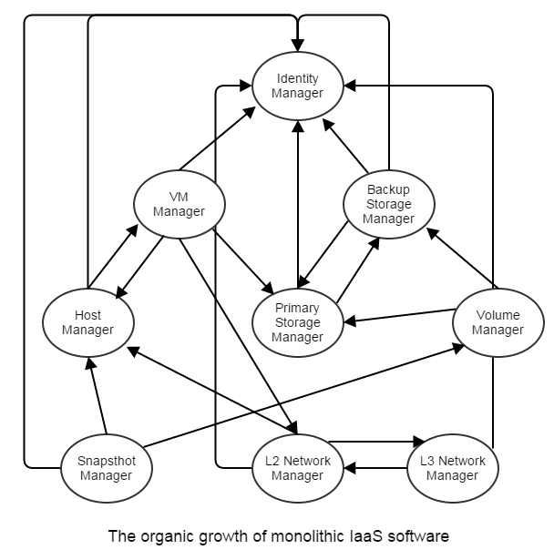
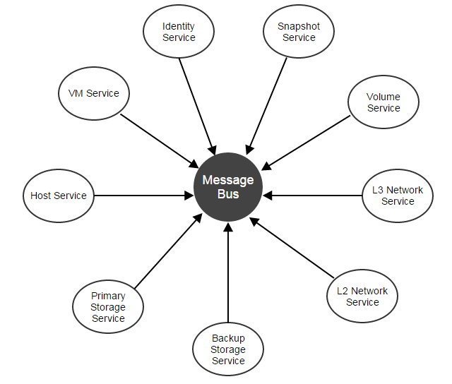

The In-Process Microservices Architecture
To tackle challenges such as significant operations overhead, duplication of effort, testability that microservices usually faces, and to achieve the benefits such as code decoupling, easy to scale-out that microservices brings in, ZStack encompasses all services in a single process called management node, building a in-process microservices architecture.
The motivation
Making an IaaS software is hard, this lesson has been learned from existing IaaS software in the market. As an integration software, an IaaS software normally needs to manage complex, various sub-systems(e.g. hypervisor, storage, networking, identity) and conduct activities that may span multiple subsystems; for example, creating a VM will involve cooperation with hypervisor, storage, and networking. As most software start with solving a concrete problem without too many architectural thoughts, their implementations often grow as:

Along with the software gets aged, the monolithic architecture will eventually become a mess that nobody can modify the code unless rebuilding the whole system from scratch. This monolithic programming problem is the perfect situation that microservices can step in. By dividing functionality of the system into small, focused, and self-contained services, and by defining protocol that how services communicate with each other, microservices can help convert a cumbersome software from a tight, net-topological architecture into a loosely coupled, star topological architecture.

Because services are compiling-independent in microservices, adding or removing services will not impact the whole architecture(of course, removing services will cause functionality loss).
Microservices are much more beyond we have talked: Microservices does have many other remarkable merits especially in a DevOps process involving multiple teams of a large origination. We are not going to discussing all cons and pros of microservices that we are sure you can find tons of relevant articles on internet, but focus on some of them which we found impact IaaS software much.
The problem
Although microservices can decouple architecture, it comes at a price. Good reads are Microservices - Not A Free Lunch! and Failing at Microservices. Here we highlight some issues that we think impact an IaaS software significantly:
1. Service boundary and duplication of effort
One challenge of constructing a microservices architecture is deciding which part of the code should be defined as a service. Some are very obvious, for example, code dealing with host specific logic can be a service. However, some, for example, code that manages database access, is hard to decide; a database service makes the architecture clear, but it also causes significant performance downgrade; usually, codes like this are made as libraries for all services. Typically services are maintained and developed in separate repos, constructing an abstract library that provides interfaces for individual software needs good skills in coordinating different groups of developers. Eventually, services end up with inventing their wheels that cause unnecessary duplication of effort.
2. Hard to deploy, upgrade and maintain
Services especially those scattered in different processes and machines are hard to deploy and upgrade. Users usually have to spend several days even weeks deploying a fully workable system, and fear upgrading an established stable system. Despite configuration management software like puppet ease the problem to some extent, users still need to overcome the steep learning curve to master them just in order to deploy or upgrade a software. Managing a cloud is difficult, efforts should not be wasted on managing software that is supposed to make life easier.
The number of services does matter: IaaS software usually has many services. Citing the famous OpenStack as an example, to have a basic setup you will need: Nova, Cinder, Neutron, Horizon, Keystone, Glance. Excluding Nova that is deployed per host, you will need to manage 20 servers if you want four instances running on separate machines for each service. Though this artificial case will unlikely happen in reality, it shows the challenge of managing separate services.
3. Scattered configurations
Services running on separate machines maintain their copy of configurations scattered in every corner of the system; updating configurations in system-wide is usually done by ad-hoc scripts that can lead to obscure failures caused by inconsistent configurations.
4. Extra monitoring effort
To track the health of the system, users have to make extra effort to monitor every single service instance. The monitoring software, built either by thirdparty tools or by services themselves, are also obsessed by similar problems of microservices because they are software still working in the distributed manner.
5. Plugin killer
Plugins are rarely heard in microservices world because each service is a small function unit running in a separate process; traditional plugin patterns (see The Versatile Plugin System) that aim to hook different function units into each other seems impossible even anti-patterns in microservices; however, for business logic that naturally impose tight dependencies among function units, microservices may make things worse because lack of plugin architecture, changing business logic may result in changes of a bunch of separate services.
Services all in one process
Realizing above problems and the fact that a workable IaaS software must run with all orchestration services up, ZStack encloses all services into a single process called management node. Besides benefits like decoupling architecture that microservices already brings in, the in-process microservices architecture gives us extra bonus:
1. Concise dependency
As all services are in one process, the software only needs one copy of supporting software(e.g. database library, message library); upgrading or changing supporting library is as simple as what we are doing for single binary applications.
2. High availability, load balancing and monitoring
Services can focus on their business logic without being disturbed by HA, load balancing, and monitoring all of which are taken care of by management nodes; furthermore, states can be split from services to create stateless services, see ZStack's Scalability Secrets Part 2: Stateless Services for more details.
3. Centralized configurations
As in a single process, all services share the same configuration file -- zstack.properties; users don't need to manage various configuration files scattered on different machines.
4. Easy to deploy, upgrade, and maintain and scale out
Deploying, upgrading, or maintaining a single management node is the same to deploying and upgrading a single application; scaling out services is just springing up multiple management nodes.
5. Plugins enabled
As running in a single process, plugins can be easily created as in traditional single process applications.
In-process microservices is not a new invention: Back to 1990s, Microsoft defined servers in its COM(Component Object Model) as remote, local, and in-process. The In-Process Servers that are DLLs loaded in the same process spaces of applications are some in-process microservices. Peter Kriens claimed to have defined OSGi µservices as a service that always communicates within the same process already four years ago.
Service Example
In microservices, a service is normally a logical representation of a repeatable business activity, is unassociated, loosely coupled, self-contained, and is a "black box" to consumers of the service. In plain English, a traditional microservice usually dedicates to specific business logic, has own APIs and configuration methods, and runs as an individual application. Even ZStack's services share the same process space; they have most of those characters. ZStack is largely a Java project written in a strong type language, but there is no even compiling dependency between orchestration services; for example, compute services(including VM service, host service, zone service, cluster service) are not depending on storage services(including volume service, primary storage service, backup storage service, volume snapshot service), though those services are bound tightly in business activities.
In the source code, a ZStack service is nothing more than a maven module, which is built as an individual JAR file. Every service can define own APIs, error codes, global configurations, global properties, and system tags. Cite KVM host service as an example, it has own APIs:
?xml version="1.0" encoding="UTF-8"?>
<service xmlns="http://zstack.org/schema/zstack">
<id>host</id>
<message>
<name>org.zstack.kvm.APIAddKVMHostMsg</name>
<interceptor>HostApiInterceptor</interceptor>
<interceptor>KVMApiInterceptor</interceptor>
</message>
</service>and various ways that allow users to configure itself:
Configure through global configuration
Note: Here only shows a small part. Users can use API to update/retrieve global configurations, what here shows is the global configuration schema.
<?xml version="1.0" encoding="UTF-8"?>
<globalConfig xmlns="http://zstack.org/schema/zstack">
<config>
<category>kvm</category>
<name>vm.migrationQuantity</name>
<description>A value that defines how many vm can be migrated in parallel when putting a KVM host into maintenance mode.</description>
<defaultValue>2</defaultValue>
<type>java.lang.Integer</type>
</config>
<config>
<category>kvm</category>
<name>reservedMemory</name>
<description>The memory capacity reserved on all KVM hosts. ZStack KVM agent is a python web server that needs some memory capacity to run. this value reserves a portion of memory for the agent as well as other host applications. The value can be overridden by system tag on individual host, cluster and zone level</description>
<defaultValue>512M</defaultValue>
</config>
</globalConfig>Configure through global property
Note: Below codes map to corresponding properties in zstack.properties file.
@GlobalPropertyDefinition
public class KVMGlobalProperty {
@GlobalProperty(name="KvmAgent.agentPackageName", defaultValue = "kvmagent-0.6.tar.gz")
public static String AGENT_PACKAGE_NAME;
@GlobalProperty(name="KvmAgent.agentUrlRootPath", defaultValue = "")
public static String AGENT_URL_ROOT_PATH;
@GlobalProperty(name="KvmAgent.agentUrlScheme", defaultValue = "http")
public static String AGENT_URL_SCHEME;
}Configure through system tags
Note: Below codes map to corresponding system tags in the database.
@TagDefinition
public class KVMSystemTags {
public static final String QEMU_IMG_VERSION_TOKEN = "version";
public static PatternedSystemTag QEMU_IMG_VERSION = new PatternedSystemTag(String.format("qemu-img::version::%s", QEMU_IMG_VERSION_TOKEN), HostVO.class);
public static final String LIBVIRT_VERSION_TOKEN = "version";
public static PatternedSystemTag LIBVIRT_VERSION = new PatternedSystemTag(String.format("libvirt::version::%s", LIBVIRT_VERSION_TOKEN), HostVO.class);
public static final String HVM_CPU_FLAG_TOKEN = "flag";
public static PatternedSystemTag HVM_CPU_FLAG = new PatternedSystemTag(String.format("hvm::%s", HVM_CPU_FLAG_TOKEN), HostVO.class);
}Service Loading
Services advertise themselves in Spring bean XML files, for example, the KVM's is partly like:
<?xml version="1.0" encoding="UTF-8"?>
<beans xmlns="http://www.springframework.org/schema/beans"
xmlns:xsi="http://www.w3.org/2001/XMLSchema-instance" xmlns:aop="http://www.springframework.org/schema/aop"
xmlns:tx="http://www.springframework.org/schema/tx" xmlns:zstack="http://zstack.org/schema/zstack"
xsi:schemaLocation="http://www.springframework.org/schema/beans
http://www.springframework.org/schema/beans/spring-beans-3.0.xsd
http://www.springframework.org/schema/aop
http://www.springframework.org/schema/aop/spring-aop-3.0.xsd
http://www.springframework.org/schema/tx
http://www.springframework.org/schema/tx/spring-tx-3.0.xsd
http://zstack.org/schema/zstack
http://zstack.org/schema/zstack/plugin.xsd"
default-init-method="init" default-destroy-method="destroy">
<bean id="KvmHostReserveExtension" class="org.zstack.kvm.KvmHostReserveExtension">
<zstack:plugin>
<zstack:extension interface="org.zstack.header.Component" />
<zstack:extension interface="org.zstack.header.allocator.HostReservedCapacityExtensionPoint" />
</zstack:plugin>
</bean>
<bean id="KVMHostFactory" class="org.zstack.kvm.KVMHostFactory">
<zstack:plugin>
<zstack:extension interface="org.zstack.header.host.HypervisorFactory" />
<zstack:extension interface="org.zstack.header.Component" />
<zstack:extension interface="org.zstack.header.managementnode.ManagementNodeChangeListener" />
<zstack:extension interface="org.zstack.header.volume.MaxDataVolumeNumberExtensionPoint" />
</zstack:plugin>
</bean>
<bean id="KVMSecurityGroupBackend" class="org.zstack.kvm.KVMSecurityGroupBackend">
<zstack:plugin>
<zstack:extension interface="org.zstack.network.securitygroup.SecurityGroupHypervisorBackend" />
<zstack:extension interface="org.zstack.kvm.KVMHostConnectExtensionPoint" />
</zstack:plugin>
</bean>
<bean id="KVMConsoleHypervisorBackend" class="org.zstack.kvm.KVMConsoleHypervisorBackend">
<zstack:plugin>
<zstack:extension interface="org.zstack.header.console.ConsoleHypervisorBackend"/>
</zstack:plugin>
</bean>
<bean id="KVMApiInterceptor" class="org.zstack.kvm.KVMApiInterceptor">
<zstack:plugin>
<zstack:extension interface="org.zstack.header.apimediator.ApiMessageInterceptor"/>
</zstack:plugin>
</bean>
</beans>The management node, which is the container of all services, will load each service by reading their XML configuration during booting period.
Summary
In this article, we demonstrated ZStack's in-process microservices architecture. With it, ZStack has a very clean, loosely coupled code structure, which is the basis of building a robust IaaS software.